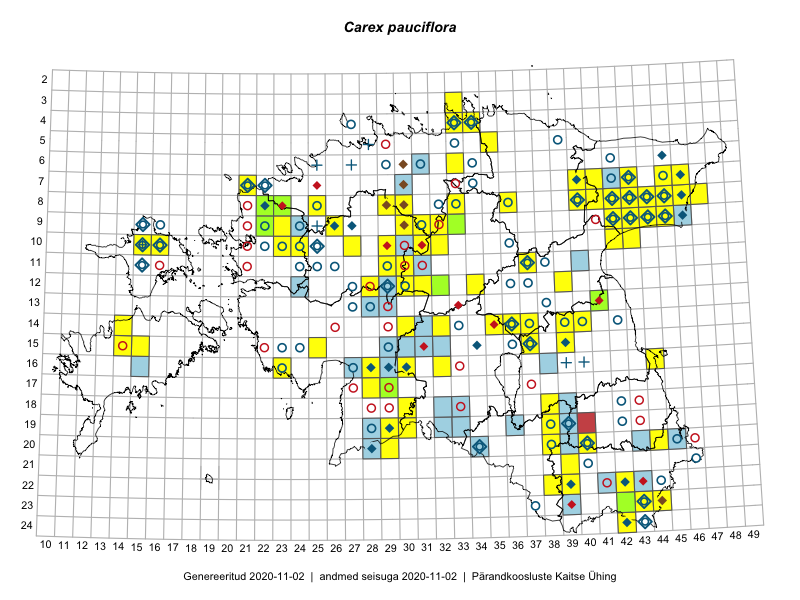

Carex pauciflora — õievähene tarn
Kaardile koondatud taksonid: Carex pauciflora Lightf. (151)

Kaart põhineb 151 kirjel, neist:
vaatlusi 143
eksemplare 8
Kaasaegsed1 leiukohad asuvad 85 ruudus.
Andmed “Eesti taimede levikuatlasest”,2 sulgudes ruutude arv:3
● 1971–2005 (66)
○ 1921–1970 (68)
△ kuni 1920 (4)
+ hävinud (0)
? kaheldav (0)
Lisaruudud teistest andmebaasidest:4
ELF: 2006– . . . (34)
PKÜ: 2006– . . . (0)
ELF: 1971–2005 (6)
PKÜ: 1997–2005 (0)
| Ruut | Vaatleja(d) | Vaatlusaeg | Kirje PlutoFis |
|---|---|---|---|
| 23-43 | Ott Luuk, Peedu Saar | 2015-08-12 | ruut/ala: Carex pauciflora Lightf. |
| 08-44 | Peedu Saar, Liina Oja | 2015-07-20 | ruut/ala: Carex pauciflora Lightf. |
| 08-45 | Peedu Saar, Liina Oja | 2015-07-22 | ruut/ala: Carex pauciflora Lightf. |
| 10-31 | Ott Luuk, Toivo Sepp | 2015-07-12 | ruut/ala: Carex pauciflora Lightf. |
| 09-45 | Peedu Saar, Liina Oja | 2015-07-24 | ruut/ala: Carex pauciflora Lightf. |
| 13-41 | Peedu Saar | 2015-08-11 | ruut/ala: Carex pauciflora Lightf. |
| 23-42 | Peedu Saar, Ott Luuk | 2015-08-12 | ruut/ala: Carex pauciflora Lightf. |
| 07-41 | Tiit Hallikma, Toomas Kukk | 2015-07-23 | ruut/ala: Carex pauciflora Lightf. |
| 10-16 | Thea Kull | 2015-06-15 | ruut/ala: Carex pauciflora Lightf. |
| 09-44 | Ott Luuk, Hannes Pehlak | 2015-07-24 | ruut/ala: Carex pauciflora Lightf. |
| 07-40 | Ott Luuk, Hannes Pehlak | 2015-07-23 | ruut/ala: Carex pauciflora Lightf. |
| 08-41 | Ott Luuk, Meeli Mesipuu | 2015-07-20 | ruut/ala: Carex pauciflora Lightf. |
| 12-30 | Ott Luuk, Hannes Pehlak | 2015-06-09 | ruut/ala: Carex pauciflora Lightf. |
| 12-31 | Ott Luuk, Hannes Pehlak | 2015-06-09 | ruut/ala: Carex pauciflora Lightf. |
| 16-32 | Maria Abakumova | 2015-06-17 | ruut/ala: Carex pauciflora Lightf. |
| 10-32 | Ott Luuk | 2015-08-03 | ruut/ala: Carex pauciflora Lightf. |
| 10-16 | Ott Luuk | 2014-08-28 | ruut/ala: Carex pauciflora Lightf. |
| 15-25 | Maret Gerz, Leena Gerz | 2015-08-08 | ruut/ala: Carex pauciflora Lightf. |
| 09-32 | Ott Luuk, Toivo Sepp | 2015-08-18 | ruut/ala: Carex pauciflora Lightf. |
| 09-33 | Thea Kull | 2014-07-14 | ruut/ala: Carex pauciflora Lightf. |
| 10-32 | Thea Kull | 2014-08-02 | ruut/ala: Carex pauciflora Lightf. |
| 12-32 | Meeli Mesipuu, Timo Luhamäe | 2015-06-11 | ruut/ala: Carex pauciflora Lightf. |
| 10-16 | Ott Luuk, Peedu Saar | 2014-10-31 | ruut/ala: Carex pauciflora Lightf. |
| 10-15 | Ott Luuk | 2014-08-28 | ruut/ala: Carex pauciflora Lightf. |
| 08-47 | Thea Kull, Peedu Saar | 2014-07-26 | ruut/ala: Carex pauciflora Lightf. |
| 23-43 | Meeli Mesipuu, Timo Luhamäe | 2016-06-15 | ruut/ala: Carex pauciflora Lightf. |
| 19-29 | Indrek Tammekänd, Eike Vunk | 2016-06-15 | ruut/ala: Carex pauciflora Lightf. |
| 16-28 | Indrek Tammekänd | 2016-06-03 | ruut/ala: Carex pauciflora Lightf. |
| 07-45 | Indrek Tammekänd | 2016-05-30 | ruut/ala: Carex pauciflora Lightf. |
| 07-46 | Indrek Tammekänd | 2016-05-30 | ruut/ala: Carex pauciflora Lightf. |
| 08-46 | Indrek Tammekänd | 2016-05-28 | ruut/ala: Carex pauciflora Lightf. |
| 22-39 | Meeli Mesipuu, Timo Luhamäe | 2016-06-16 | ruut/ala: Carex pauciflora Lightf. |
| 22-42 | Toomas Kukk, Tiit Hallikma, Johannes Kõdar | 2016-06-15 | ruut/ala: Carex pauciflora Lightf. |
| 20-40 | Peedu Saar, Tarmo Niitla | 2016-06-17 | ruut/ala: Carex pauciflora Lightf. |
| 22-38 | Vivika Väli, Kaili Kattai | 2015-08-10 | ruut/ala: Carex pauciflora Lightf. |
| 09-30 | Sander Laherand, Toomas Kukk | 2016-07-06 | ruut/ala: Carex pauciflora Lightf. |
| 13-41 | Ulvi Selgis | 2016-07-06 | ruut/ala: Carex pauciflora Lightf. |
| 07-40 | Toomas Kukk, Tiit Hallikma | 2016-07-29 | ruut/ala: Carex pauciflora Lightf. |
| 14-32 | Toomas Kukk, Liina Oja | 2016-07-21 | ruut/ala: Carex pauciflora Lightf. |
| 10-42 | Ott Luuk, Eerik Leibak | 2016-08-04 | ruut/ala: Carex pauciflora Lightf. |
| 09-42 | Ott Luuk, Eerik Leibak | 2016-08-05 | ruut/ala: Carex pauciflora Lightf. |
| 23-44 | Peedu Saar, Karin Kikas | 2016-08-19 | ruut/ala: Carex pauciflora Lightf. |
| 11-30 | Erkki Otsman, Sergei Smirnov | 2016-07-18 | ruut/ala: Carex pauciflora Lightf. |
| 14-30 | Hannes Pehlak, Tõnu Ploompuu, Marko Veinbergs | 2016-07-21 | ruut/ala: Carex pauciflora Lightf. |
| 09-31 | Peedu Saar, Ott Luuk | 2016-09-07 | ruut/ala: Carex pauciflora Lightf. |
| 03-33 | Peedu Saar, Timo Luhamäe | 2016-07-26 | ruut/ala: Carex pauciflora Lightf. |
| 16-23 | Peedu Saar, Timo Luhamäe, Johannes Kõdar | 2016-07-04 | ruut/ala: Carex pauciflora Lightf. |
| 18-38 | Ott Luuk, Thea Kull | 2016-08-23 | ruut/ala: Carex pauciflora Lightf. |
| 09-33 | Ott Luuk, Eerik Leibak | 2016-07-25 | ruut/ala: Carex pauciflora Lightf. |
| 17-28 | Ott Luuk, Liina Oja | 2016-07-20 | ruut/ala: Carex pauciflora Lightf. |
| 18-30 | Ott Luuk, Raivo Kalle, Susanna Vain | 2016-07-19 | ruut/ala: Carex pauciflora Lightf. |
| 19-30 | Ott Luuk, Raivo Kalle, Susanna Vain | 2016-07-19 | ruut/ala: Carex pauciflora Lightf. |
| 10-43 | Hannes Pehlak, Ott Luuk | 2016-07-29 | ruut/ala: Carex pauciflora Lightf. |
| 22-39 | Ott Luuk, Peedu Saar | 2017-07-27 | ruut/ala: Carex pauciflora Lightf. |
| 12-39 | Ulvi Selgis | 2017-07-28 | ruut/ala: Carex pauciflora Lightf. |
| 14-36 | Ott Luuk | 2017-08-15 | ruut/ala: Carex pauciflora Lightf. |
| 14-37 | Meeli Mesipuu | 2017-08-14 | ruut/ala: Carex pauciflora Lightf. |
| 14-36 | Indrek Tammekänd | 2017-08-16 | ruut/ala: Carex pauciflora Lightf. |
| 19-29 | Toomas Kukk, Ott Luuk, Kersti Tambets, Timo Luhamäe, Sten Mander | 2017-08-29 | ruut/ala: Carex pauciflora Lightf. |
| 16-28 | Indrek Tammekänd | 2014-09-04 | ruut/ala: Carex pauciflora Lightf. |
| 17-29 | Indrek Tammekänd | 2014-09-04 | ruut/ala: Carex pauciflora Lightf. |
| 12-28 | Indrek Tammekänd | 2014-09-17 | ruut/ala: Carex pauciflora Lightf. |
| 14-35 | Ott Luuk | 2017-08-16 | ruut/ala: Carex pauciflora Lightf. |
| 16-28 | Peedu Saar, Timo Luhamäe | 2017-08-11 | ruut/ala: Carex pauciflora Lightf. |
| 08-40 | Peedu Saar, Ott Luuk | 2017-07-18 | ruut/ala: Carex pauciflora Lightf. |
| 15-37 | Peedu Saar, Susanna Vain | 2017-08-22 | ruut/ala: Carex pauciflora Lightf. |
| 14-35 | Peedu Saar | 2017-08-15 | ruut/ala: Carex pauciflora Lightf. |
| 12-34 | Ott Luuk, Thea Kull | 2017-08-03 | ruut/ala: Carex pauciflora Lightf. |
| 20-38 | Ott Luuk, Peedu Saar | 2017-07-25 | ruut/ala: Carex pauciflora Lightf. |
| 06-33 | Ott Luuk, Peedu Saar | 2017-07-21 | ruut/ala: Carex pauciflora Lightf. |
| 09-26 | Meeli Mesipuu, Indrek Tammekänd | 2017-08-08 | ruut/ala: Carex pauciflora Lightf. |
| 08-41 | Meeli Mesipuu, Ott Luuk | 2015-07-20 | punkt: Carex pauciflora Lightf. |
| 12-32 | Timo Luhamäe, Meeli Mesipuu | 2015-06-11 | punkt: Carex pauciflora Lightf. |
| 12-32 | Meeli Mesipuu, Timo Luhamäe | 2015-06-11 | punkt: Carex pauciflora Lightf. |
| 20-40 | Tarmo Niitla, Peedu Saar | 2016-06-17 | punkt: Carex pauciflora Lightf. |
| 23-43 | Timo Luhamäe, Meeli Mesipuu | 2016-06-15 | punkt: Carex pauciflora Lightf. |
| 22-39 | Timo Luhamäe, Meeli Mesipuu | 2016-06-16 | punkt: Carex pauciflora Lightf. |
| 23-44 | Karin Kikas, Peedu Saar | 2016-08-19 | punkt: Carex pauciflora Lightf. |
| 18-38 | Thea Kull, Ott Luuk | 2016-08-23 | punkt: Carex pauciflora Lightf. |
| 16-23 | Timo Luhamäe, Peedu Saar | 2016-07-04 | punkt: Carex pauciflora Lightf. |
| 17-28 | Liina Oja, Ott Luuk | 2016-07-20 | punkt: Carex pauciflora Lightf. |
| 18-30 | Susanna Vain, Ott Luuk, Raivo Kalle | 2016-07-19 | punkt: Carex pauciflora Lightf. |
| 19-30 | Susanna Vain, Ott Luuk, Raivo Kalle | 2016-07-19 | punkt: Carex pauciflora Lightf. |
| 09-31 | Ott Luuk, Peedu Saar | 2016-09-07 | punkt: Carex pauciflora Lightf. |
| 22-42 | Tiit Hallikma, Toomas Kukk, Johannes Kõdar | 2016-06-15 | punkt: Carex pauciflora Lightf. |
| 03-33 | Timo Luhamäe, Peedu Saar | 2016-07-26 | punkt: Carex pauciflora Lightf. |
| 08-42 | Timo Luhamäe, Peedu Saar | 2016-07-29 | punkt: Carex pauciflora Lightf. |
| 10-42 | Ott Luuk, Eerik Leibak | 2016-08-04 | punkt: Carex pauciflora Lightf. |
| 20-29 | Indrek Tammekänd | 2016-06-22 | punkt: Carex pauciflora Lightf. |
| 21-39 | Ilmar Uibopuu | 2017-07-14 | ruut/ala: Carex pauciflora Lightf. |
| 12-34 | Thea Kull, Ott Luuk | 2017-08-03 | punkt: Carex pauciflora Lightf. |
| 16-28 | Timo Luhamäe, Peedu Saar | 2017-08-11 | punkt: Carex pauciflora Lightf. |
| 14-37 | Meeli Mesipuu, Helen Toom | 2017-08-14 | punkt: Carex pauciflora Lightf. |
| 06-33 | Peedu Saar, Ott Luuk | 2017-07-21 | punkt: Carex pauciflora Lightf. |
| 20-29 | Indrek Tammekänd | 2016-06-22 | ruut/ala: Carex pauciflora Lightf. |
| 20-38 | Ott Luuk, Peedu Saar | 2017-07-25 | punkt: Carex pauciflora Lightf. |
| 14-35 | Meeli Mesipuu, Ott Luuk, Helen Toom | 2017-08-28 | ruut/ala: Carex pauciflora Lightf. |
| 23-42 | Toomas Kukk, Eerik Leibak | 2018-07-18 | ruut/ala: Carex pauciflora Lightf. |
| 09-43 | Toomas Kukk | 2018-07-17 | punkt: Carex pauciflora Lightf. |
| 10-27 | Peedu Saar, Toomas Kukk, Ott Luuk, Kersti Tambets, Sten Mander | 2018-08-16 | ruut/ala: Carex pauciflora Lightf. |
| 08-44 | Peedu Saar | 2018-07-17 | ruut/ala: Carex pauciflora Lightf. |
| 08-45 | Peedu Saar | 2018-07-17 | ruut/ala: Carex pauciflora Lightf. |
| 09-45 | Peedu Saar | 2018-07-19 | ruut/ala: Carex pauciflora Lightf. |
| 15-15 | Eerik Leibak | 2019-07-05 | punkt: Carex pauciflora Lightf. |
| 10-15 | Toomas Kukk | 2019-07-03 | ruut/ala: Carex pauciflora Lightf. |
| 10-15 | Toomas Kukk | 2019-07-03 | punkt: Carex pauciflora Lightf. |
| 04-34 | Toomas Kukk, Rein Kalamees | 2019-08-06 | punkt: Carex pauciflora Lightf. |
| 08-23 | Peedu Saar, Ott Luuk, Sten Mander, Kersti Tambets, Kristine Fenske | 2019-08-22 | ruut/ala: Carex pauciflora Lightf. |
| 19-38 | Thea Kull | 2019-07-11 | ruut/ala: Carex pauciflora Lightf. |
| 19-38 | Thea Kull | 2019-07-11 | punkt: Carex pauciflora Lightf. |
| 14-14 | Mari Reitalu, Sirje Azarov, Anne Teigamägi | 2019-09-04 | ruut/ala: Carex pauciflora Lightf. |
| 15-14 | Mari Reitalu, Sirje Azarov | 2019-09-23 | ruut/ala: Carex pauciflora Lightf. |
| 15-14 | Mari Reitalu, Sirje Azarov | 2019-09-23 | punkt: Carex pauciflora Lightf. |
| 07-21 | Peedu Saar | 2019-07-25 | ruut/ala: Carex pauciflora Lightf. |
| 08-22 | Peedu Saar | 2019-07-23 | punkt: Carex pauciflora Lightf. |
| 09-44 | Ott Luuk | 2019-09-28 | ruut/ala: Carex pauciflora Lightf. |
| 09-45 | Ott Luuk | 2019-09-27 | punkt: Carex pauciflora Lightf. |
| 09-45 | Ott Luuk | 2019-09-27 | ruut/ala: Carex pauciflora Lightf. |
| 16-30 | Peedu Saar, Martin Tikk, Toomas Kukk | 2019-08-28 | ruut/ala: Carex pauciflora Lightf. |
| 15-14 | Sirje Azarov, Mari Reitalu, Anne Teigamägi | 2019-09-04 | punkt: Carex pauciflora Lightf. |
| 15-14 | Sirje Azarov, Mari Reitalu | 2019-09-23 | punkt: Carex pauciflora Lightf. |
| 05-35 | Peedu Saar, Timo Luhamäe | 2019-08-07 | ruut/ala: Carex pauciflora Lightf. |
| 08-42 | Ott Luuk, Meeli Mesipuu | 2019-09-10 | punkt: Carex pauciflora Lightf. |
| 08-43 | Ott Luuk, Meeli Mesipuu | 2019-09-10 | ruut/ala: Carex pauciflora Lightf. |
| 07-43 | Ott Luuk, Meeli Mesipuu | 2019-09-12 | punkt: Carex pauciflora Lightf. |
| 08-25 | Ott Luuk, Peedu Saar | 2019-09-05 | ruut/ala: Carex pauciflora Lightf. |
| 09-22 | Ott Luuk | 2019-09-03 | punkt: Carex pauciflora Lightf. |
| 09-22 | Ott Luuk | 2019-09-03 | ruut/ala: Carex pauciflora Lightf. |
| 08-33 | Ott Luuk, Jaak-Albert Metsoja | 2019-08-08 | ruut/ala: Carex pauciflora Lightf. |
| 04-33 | Ott Luuk, Jaak-Albert Metsoja | 2019-08-07 | ruut/ala: Carex pauciflora Lightf. |
| 08-36 | Ott Luuk, Jaak-Albert Metsoja | 2019-08-05 | ruut/ala: Carex pauciflora Lightf. |
| 07-43 | Meeli Mesipuu, Ott Luuk | 2019-09-12 | ruut/ala: Carex pauciflora Lightf. |
| 08-36 | Ott Luuk, Jaak-Albert Metsoja | 2019-08-05 | punkt: Carex pauciflora Lightf. |
| 08-33 | Ott Luuk, Jaak-Albert Metsoja | 2019-08-08 | punkt: Carex pauciflora Lightf. |
| 11-29 | Ott Luuk, Toivo Sepp | 2019-07-23 | punkt: Carex pauciflora Lightf. |
| 11-29 | Ott Luuk, Toivo Sepp | 2019-07-23 | punkt: Carex pauciflora Lightf. |
| 09-32 | Ott Luuk, Toivo Sepp | 2019-07-24 | punkt: Carex pauciflora Lightf. |
| 09-31 | Ott Luuk, Toivo Sepp | 2019-07-25 | ruut/ala: Carex pauciflora Lightf. |
| 20-44 | Ott Luuk, Tiit Hallikma | 2019-07-09 | ruut/ala: Carex pauciflora Lightf. |
| 08-30 | Thea Kull | 2012-10-03 | ruut/ala: Carex pauciflora Lightf. |
| 08-29 | Thea Kull | 2012-10-03 | ruut/ala: Carex pauciflora Lightf. |
| 10-23 | Thea Kull | 2012-07-16 | ruut/ala: Carex pauciflora Lightf. |
| 23-43 | Ott Luuk, Tiit Hallikma | 2019-07-11 | ruut/ala: Carex pauciflora Lightf. |
| 09-22 | Toomas Kukk | 2006-06-21 | TAA0052062: Carex pauciflora Lightf. |
| 23-42 | Toomas Kukk | 2006-08-13 | TAA0052063: Carex pauciflora Lightf. |
| 08-22 | Thea Kull | 2012-05-31 | TAA0116726: Carex pauciflora Lightf. |
| 17-29 | Kai Vellak | 2016-06-05 | TU309690: Carex pauciflora Lightf. |
| 09-33 | Thea Kull | 2014-07-15 | TAA0113807: Carex pauciflora Lightf. |
| 09-33 | Thea Kull | 2014-07-15 | TAA0113808: Carex pauciflora Lightf. |
| 12-32 | Meeli Mesipuu, Timo Luhamäe | 2015-06-11 | TAA0143874: Carex pauciflora Lightf. |
| 13-41 | Ulvi Selgis | 2018-06-18 | TAA0142378: Carex pauciflora Lightf. |
Kaasaegsed leiukohad (tähistatud värvitud ruutudega) põhinevad peamiselt 2014–2019 välitööandmetel. Väiksemal määral on andmebaasi kantud vanemaid leiuandmeid aastatest 2006–2013.↩︎
Kukk, T., Kull, T., Eesti taimede levikuatlas. Eesti Maaülikool, Põllumajandus- ja Keskkonnainstituut, Tartu, 2005.↩︎
NB! 2005. aasta atlase andmestikus katavad uuemad leiud vanemaid. Näiteks kui liik on ruudus registreeritud 1971–2005, siis pole võimalik öelda, kas ta oli sellest ruudust teada ka enne 1970. aastat. Vana atlase andmetel hävinud ja kaheldavaid leiukohti pole hilisemate (taas)leidude põhjal korrigeeritud.↩︎
Eestimaa Looduse Fondi (ELF) ja Pärandkoosluste Kaitse Ühingu (PKÜ) andmebaasid sisaldavad inventeeritud koosluste kirjeldusi ja liigiloendeid. Neist andmekogudest on kaardile lisatud lisatud vaid need ruudud, millest uue atlase andmekogus taksoni kohta kirjeid veel pole. Kõrvale on jäetud teadaolevalt kaheldavad määrangud. Kaartidel katavad uuema perioodi andmed vanemaid, PKÜ omad ELFi omi. Kattumise tõttu võib kaardil näha olla vähem mingi kategooria ruute kui legendis olev arv näitab. ELFi ja PKÜ andmed ei kajastu hetkel vaatluste tabelis ega ruutude liigiloendites.↩︎